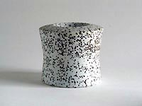
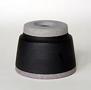
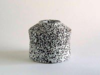
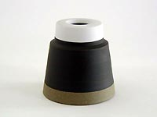
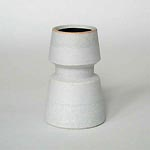
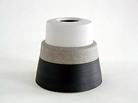
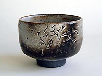
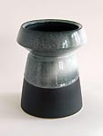
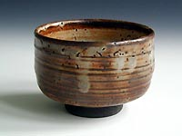

| Martin Schlotz - Vessels
Article by Walter H. Lokau

Martin Schlotz’
ceramic vessels emerge from the potter’s wheel. Yet the romanticized
and artistic aspects of this traditional working technique are far
from what he actually does. He is concerned with the problem of
modern vessel-ceramics in general: the search for developing and
forming of vessels beyond their apparent use or purpose. As an astute
beneficiary of studying centuries-old ceramics development, he has
thorough mastery of the craft. He sees his medium from basic vessels
through radical transformations, which ultimately need no instructions
or words. "They are vessels without speculative ingratiation,”
an auspiciously polemical articulation by Volker Ellwangers, who
once described the work of his teacher Jan Botjes von Beek with
similar praise. That comment exemplified not only to Volker’s
own work, but also “A fortifiori,” which was crafted
by Martin Schlotz.

Martin Schlotz works in thematic series. He works on variations
of one specific type of form at a time. He might create smooth,
strong tower forms made of stoneware clay on a wide base, built
up in tightly structured arrangements. He may conjure austere-walled
shells of a clear tectonic structure, stemming from a narrow enlarged
foot to a high, wide-rimmed opening. His ideal point of departure
is often the basic cylinder, which can be fashioned into slimmer
or wider conic forms. Never are these forms gently rounded through
incremental modular combinations. Martin is truly composing art,
not an assembly-line combination of individual pieces. Contrary
to standard expectations, there are no construction plans involved.
The quite unrefined and sometimes technical severity of the autonomous
form is hiding the relaxed, joyful candidness of its development;
decisions are only made through aesthetic judgment. The angle of
the aperture, the sharpness of a wrapping, the height of a section,
the proportions of parts to one another, are wholly arrived through
inspired intuition. Ultimately, this intuition, like the artist,
may love or loath the finished work, yet would not know either throughout
the process until the work is complete. The variations themselves
confirm the ambiguity of art: though a piece is seemingly perfect,
the perfect piece will never exist to the true artist who continuously
strives toward perfection – the unattainable goal. Such is
true with Martin Schlotz.

The entire process illustrates the artist’s passion and skill.
The created forms will be covered with adequate glaze, though rarely
completely. Square-dipping of the vessel often leads to an open
base. By covering the different variations with similar glaze, the
effect of hiding and purifying the form is visible: less may be
more, very little everything. Martin Schlotz uses different glazes
with confident mastery. Years of experience provides him with an
immense on-demand knowledge base concerning the handling of the
material. This wide spectrum of techniques leads to unpredictable
behavior during the reduction firing, though often with magnificent
results. The glaze, featuring at times the crackle pattern or the
oxidized and fire-licked surface treatment, never becomes an effect
or an end in itself: opaque or transparent, matte or glossy, thick
or thin-layered, engobe-undercoated or colored, the glaze always
serves the form. The relational effect between form and glaze is
also unpredictable. Decisions during the process of glazing are
made by an aesthetic instinct, which follows neither rule nor recipe.
After having passed through the gas stove reduction firing at 1300°C,
the vessel itself will prove whether the right decisions were made.
Beauty is not manufactured; it is a gift that manifests itself only
in the finish work.

In addition to interest in pottery, Martin Schlotz also experimented
in the past few years with self-made porcelain, which is more difficult
to handle than stoneware. Plain or colored, rose-gray or olive-green,
the surface of porcelain remains unglazed. These pieces are composed
only of horizontal strips of dark engobe or light porcelain, which
distinguish the vessel’s individual components from one another,
or mediate between the changes in the silhouette. Some pieces have
pure white porcelain finishes that materialize out of roughened
chamotte forms. From this intertwining of form and color, the compositional
complexity of a seemingly simple vessel is increased. The composition,
form, and coloring of the vessel must arise from a multitude of
combinational possibilities in the limited array of formal and chromatic
elements. The ostensibly minute playground then widens to an infinity
of nuance. The sequence of artistic decisions, whose consequences
are revealed in the final product, remains legible upon close examination.
Realize then, that the countless potential paths that were never
taken would have led to so many vessels that will never exist. Particularly
because of his inexorably harsh and utterly creative determination,
the vessels created by Marin Schlotz palpitate in the wake of obvious
implausibility: a challenge for both our aesthetic sensibility and
logical minds. Shall we critically evaluate each individual form,
in order to correct the artist’s chosen decisions in our mind’s
eye? Or perhaps we may simply embrace our artistic intuition and
merely love these works for their raw and unhindered beauty.
Walter H. Lokau, Berlin
Copyright by Walter H. Lokau and Museum Eckernförde, Dr. Beitz
Translated by Anke Weinandy and Jamie Chan
More Articles
|
{kind=link}
{kind=link}
{kind=link}
{kind=link}
{kind=link}
{kind=link}
{kind=link}
{kind=link}
{kind=link}